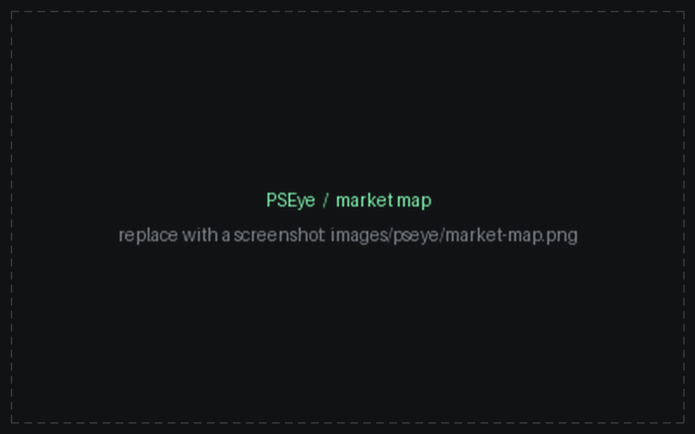
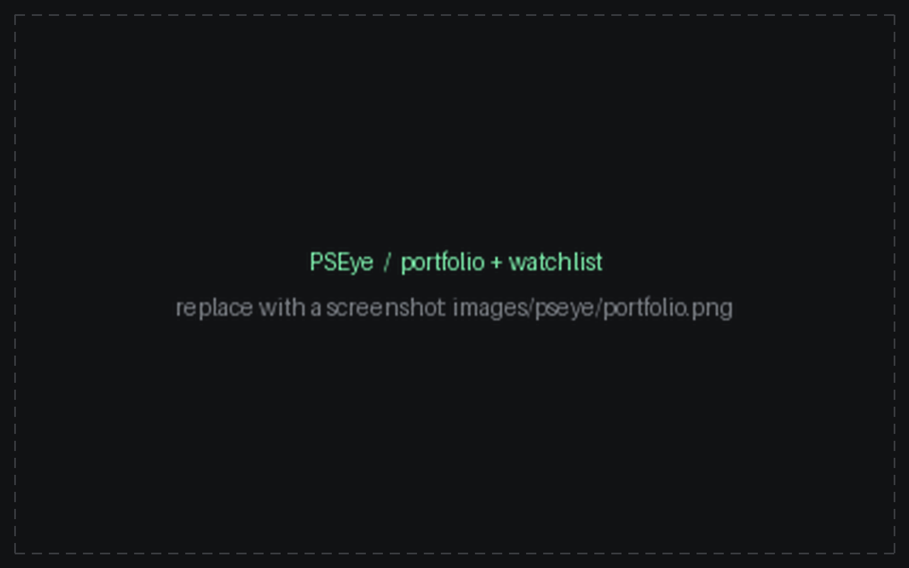
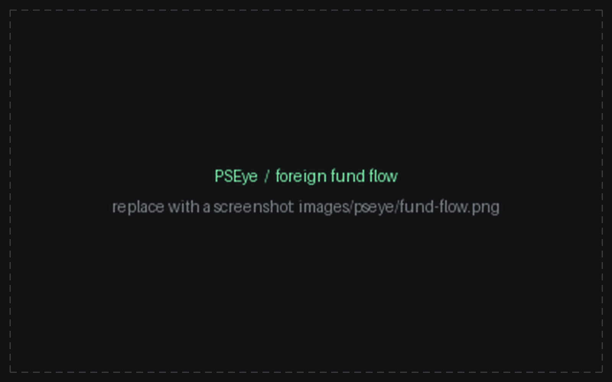

Flagship · live in production
PSEye
A live market intelligence platform covering all 282 PSE-listed companies — market map, portfolio and watchlist tracking, dividend history, and foreign fund flow. I designed the daily ingestion pipeline and the unified schema that standardizes inconsistent exchange sources into a single queryable model, powering an automated market recap.
ImpactA live product with real users, not a demo — 2,500 monthly visitors and full coverage of the exchange.



coverage282 / 282 listed
ingestiondaily · automated recap
status● live at pseye.site
Next.jsTypeScriptPostgres (Neon)Vercel